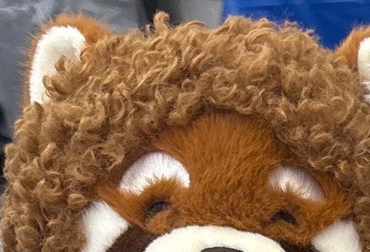
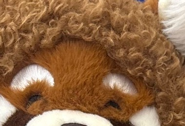
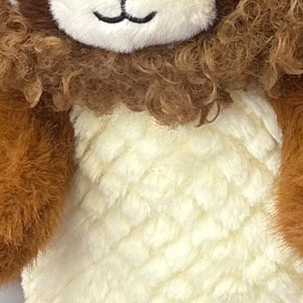
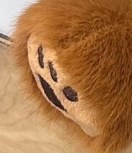
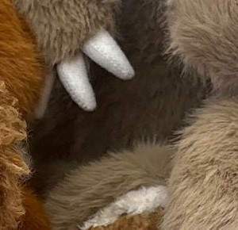
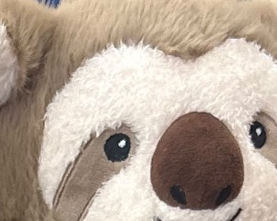
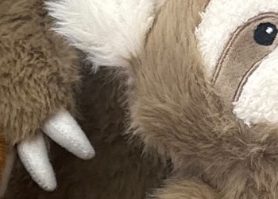
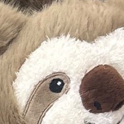

Curly maneרעמה מתולתלת

Silky-smooth earsאוזניים חלקות

Waffle-knit bellyבטן וופל

Ribbed paw padsכריות כפות מחורצות

Long-pile furפרווה ארוכה

Smooth faceפנים חלקות

Textured clawsטפרים עם מרקם

Raised-dot belly patchכתם נקודות בולט